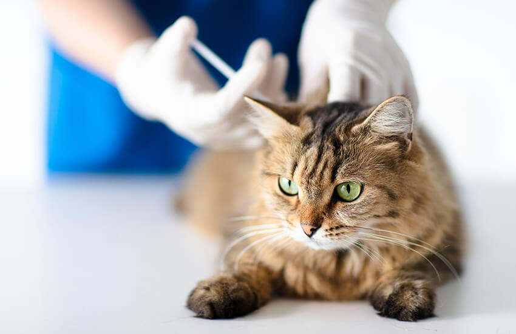

Vacinação
É importante vacinar os nossos animais para que criem resistência às várias doenças e virus que podem afetá-los.
Faremos uma plano de vacinação do seu animal de acordo com as suas características, estilo de vida, e das suas próprias necessidades.
